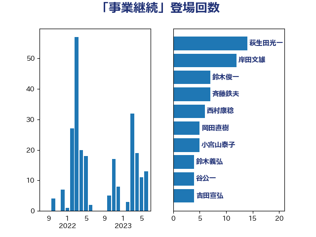

単語「事業継続」

| 萩生田光一 | 自由民主党 | 14 回 |
| 岸田文雄 | 自由民主党 | 12 回 |
| 鈴木俊一 | 自由民主党 | 7 回 |
| 斉藤鉄夫 | 公明党 | 7 回 |
| 西村康稔 | 自由民主党 | 6 回 |
| 岡田直樹 | 自由民主党 | 5 回 |
| 小宮山泰子 | 立憲民主党 | 5 回 |
| 鈴木義弘 | 国民民主党 | 4 回 |
| 谷公一 | 自由民主党 | 4 回 |
| 吉田宣弘 | 公明党 | 4 回 |
| 菊田真紀子 | 立憲民主党 | 3 回 |
| 河野太郎 | 自由民主党 | 3 回 |
| 吉川元 | 立憲民主党 | 3 回 |
| 倉林明子 | 日本共産党 | 3 回 |
| 階猛 | 立憲民主党 | 2 回 |
| 野田聖子 | 自由民主党 | 2 回 |
| 野村哲郎 | 自由民主党 | 2 回 |
| 礒崎哲史 | 国民民主党 | 2 回 |
| 石川博崇 | 公明党 | 2 回 |
| 石井章 | 日本維新の会 | 2 回 |
| 田村貴昭 | 日本共産党 | 2 回 |
| 田村智子 | 日本共産党 | 2 回 |
| 横沢高徳 | 立憲民主党 | 2 回 |
| 柴愼一 | 立憲民主党 | 2 回 |
| 平山佐知子 | 無所属 | 2 回 |
| 岩渕友 | 日本共産党 | 2 回 |
| 山際大志郎 | 自由民主党 | 2 回 |
| 大家敏志 | 自由民主党 | 2 回 |
| 城井崇 | 立憲民主党 | 2 回 |
| 黄川田仁志 | 自由民主党 | 1 回 |
| 高橋光男 | 公明党 | 1 回 |
| 高市早苗 | 自由民主党 | 1 回 |
| 音喜多駿 | 日本維新の会 | 1 回 |
| 青木愛 | 立憲民主党 | 1 回 |
| 長浜博行 | 無所属 | 1 回 |
| 野田国義 | 立憲民主党 | 1 回 |
| 道下大樹 | 立憲民主党 | 1 回 |
| 赤池誠章 | 自由民主党 | 1 回 |
| 赤木正幸 | 日本維新の会 | 1 回 |
| 篠原豪 | 立憲民主党 | 1 回 |
| 笠井亮 | 日本共産党 | 1 回 |
| 竹詰仁 | 国民民主党 | 1 回 |
| 秋野公造 | 公明党 | 1 回 |
| 石原宏高 | 自由民主党 | 1 回 |
| 石井苗子 | 日本維新の会 | 1 回 |
| 石井正弘 | 自由民主党 | 1 回 |
| 石井啓一 | 公明党 | 1 回 |
| 田村まみ | 国民民主党 | 1 回 |
| 田名部匡代 | 立憲民主党 | 1 回 |
| 田中健 | 国民民主党 | 1 回 |
| 熊田裕通 | 自由民主党 | 1 回 |
| 源馬謙太郎 | 立憲民主党 | 1 回 |
| 渡辺猛之 | 自由民主党 | 1 回 |
| 渡辺周 | 立憲民主党 | 1 回 |
| 渡辺博道 | 自由民主党 | 1 回 |
| 清水貴之 | 日本維新の会 | 1 回 |
| 浜地雅一 | 公明党 | 1 回 |
| 武部新 | 自由民主党 | 1 回 |
| 武井俊輔 | 自由民主党 | 1 回 |
| 櫛渕万里 | れいわ新選組 | 1 回 |
| 横山信一 | 公明党 | 1 回 |
| 森本真治 | 立憲民主党 | 1 回 |
| 柴田巧 | 日本維新の会 | 1 回 |
| 林芳正 | 自由民主党 | 1 回 |
| 松沢成文 | 日本維新の会 | 1 回 |
| 松村祥史 | 自由民主党 | 1 回 |
| 本庄知史 | 立憲民主党 | 1 回 |
| 末次精一 | 立憲民主党 | 1 回 |
| 早稲田ゆき | 立憲民主党 | 1 回 |
| 後藤茂之 | 自由民主党 | 1 回 |
| 庄子賢一 | 公明党 | 1 回 |
| 平木大作 | 公明党 | 1 回 |
| 岡本あき子 | 立憲民主党 | 1 回 |
| 山田勝彦 | 立憲民主党 | 1 回 |
| 山本太郎 | れいわ新選組 | 1 回 |
| 山本博司 | 公明党 | 1 回 |
| 山井和則 | 立憲民主党 | 1 回 |
| 小沼巧 | 立憲民主党 | 1 回 |
| 小林鷹之 | 自由民主党 | 1 回 |
| 寺田静 | 無所属 | 1 回 |
| 宮路拓馬 | 自由民主党 | 1 回 |
| 守島正 | 日本維新の会 | 1 回 |
| 堀場幸子 | 日本維新の会 | 1 回 |
| 吉良よし子 | 日本共産党 | 1 回 |
| 吉川ゆうみ | 自由民主党 | 1 回 |
| 古川康 | 自由民主党 | 1 回 |
| 古川元久 | 国民民主党 | 1 回 |
| 加藤勝信 | 自由民主党 | 1 回 |
| 住吉寛紀 | 日本維新の会 | 1 回 |
| 井上哲士 | 日本共産党 | 1 回 |
| 中谷真一 | 自由民主党 | 1 回 |
| 三浦信祐 | 公明党 | 1 回 |
| 一谷勇一郎 | 日本維新の会 | 1 回 |
| ながえ孝子 | 無所属 | 1 回 |